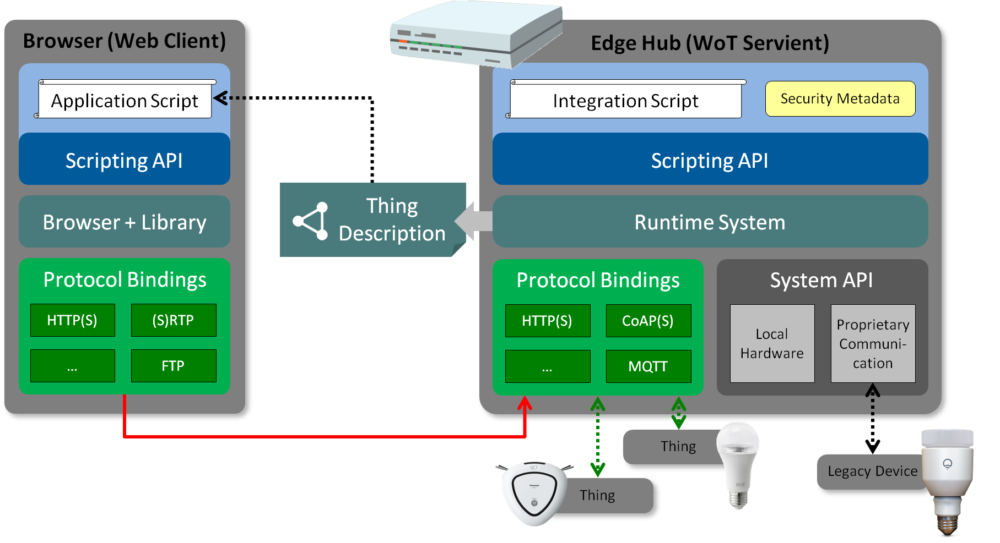

The Web of Things is intended to support IoT interoperability.
Primarily, it provides mechanisms to formally describe IoT interfaces
to allow IoT devices and services to communicate with each other,
independent of their underlying implementation,
and across multiple networking protocols.
Secondarily, it provides a standardized way to define and program IoT behaviour.
This document describes the abstract architecture for the Web of Things.
It is derived from a set of use cases and consists of
a set of building blocks.
In this document, each building block is defined and its function explained.
The WoT abstract architecture can be mapped onto a variety of concrete implementation patterns,
several examples of which are given.
This document is focused on the standardization scope of Web of Things,
which consists of three primary building blocks:
Thing Descriptions, a Scripting API, and Binding Templates.
The Thing Description provides a formal mechanism to describe the network interface
provided by an IoT service, independent of its implementation.
Provision of a Thing Description is the primary requirement for a device to participate in the
Web of Things.
In fact, defining a Thing Description for an existing device allows that device to
participate in the Web of Things without having to make any modifications to that device.
The Scripting API provides a convenient mechanism to create, expose, and consume
Thing Descriptions and define behavior, although its use is not mandatory.
Binding Templates define how a Web of Things device communicates using a specific concrete protocol.
Other non-normative architectural blocks and conditions underlying the Web of Things are also
described in the context of example implementations and/or requirements.
In particular, this document includes a description of implementation issues on constrained devices.
Recommendations for security and privacy are also included;
in general,
the Web of Things is intended to preserve and support existing privacy and security device mechanisms and properties.
The "Web of Things" (WoT) started as an academic initiative in the form of publications and, starting in 2010, a yearly International Workshop on the Web of Things.
Its goal is to improve interoperability as well as usability in the Internet of Things (IoT).
With the increasing role of WoT in commercial and industrial applications,
the W3C chartered an Interest Group in 2015
to identify technological building blocks for Recommendation Track standardization.
With the WoT Working Group chartered end of 2016, the first set of WoT building blocks is now being standardized:
This document serves as an umbrella for the W3C WoT draft specifications
and defines the basics such as terminology and the underlying abstract architecture of the W3C Web of Things.
In particular, the purpose of this document is to provide
a set of use cases that lead to the W3C WoT Architecture,
a set of requirements for WoT implementations,
an overview of the WoT building blocks being standardized and their interplay,
a guideline to map the abstract architechture to software stacks and hardware components,
and security considerations to be aware of when implementing WoT building blocks.
Terminology
This document uses the following terms as defined here.
The WoT prefix is used to avoid ambiguity for terms that are defined specifically for Web of Things concepts.
For now see this markdown file.
It will be merged here before the FPWD release.
Term
Definition
Use Cases
This section presents the use cases targeted by W3C WoT and which are used to derive the abstract architecture discussed in .
While the Smart Home use cases might appear predominant in this section,
they should be seen as mere vehicle to identify fundamental requirements inherent to most application domains.
The Smart Home domain is eligible for this, as most stakeholders can relate to it.
The individual use cases need polishing. The figures should avoid already talking about WoT and Servients, but just name the functional roles (existing device, smart home hub / factory cell controller and line controller, cloud proxy, etc.).
Smart Home
The Smart Home is one of the application domains targeted by W3C WoT.
As stated above its use cases are eligible to convey the fundamental requirements on discovery, connectivity, and provided functionality.
Also security has become a central issue in consumer systems.
Furthermore, Smart Home use cases have stronger privacy requirements than commercial and industrial ones.
In general, the fundamental aspects of the Smart Home use cases given also apply to other use cases.
Device Controllers
The first use case is a local device controlled by user-operated remote controller as depicted in .
For example, an electronic appliance such as an air conditioner with Web server functionality might be connected directly to a local home network.
A remote controller can access the air conditioner through the local home network directly.
In this case, the remote controller can be realized by a browser or native application.
Device Control
Device Agents
shows an example of direct Thing-to-Thing control.
This scenario is as follows:
when a sensor detects the room temperature is surpassing a set threshold (e.g., 25°C),
a control agent issues a "power-on" command to an air conditioner.
Device Agents
Multiple Network Interfaces
The third use case is a mobile remote controller (e.g., on a smartphone) as shown in .
When at home, the smartphone can use Wi-Fi or Bluetooth/BLE to control an electronic appliance locally,
while outside, it can use the cellular network.
Multiple Network Interfaces
Smart Home Hubs
shows a use case based on a Smart Home hub.
It is placed between a home network and the Internet.
The hub manages electronic appliances inside the house
and can receive commands from a remote controller over the Internet,
e.g., from a smartphone as in the previous use case.
Smart Home Hubs
Cloud Device Shadows
Device Shadows in the cloud can be realized in different ways:
The complexity of the use cases here increases to quickly, with to many features added at once.
Cloud-ready Devices
shows an example where electronic appliances are connected directly to the cloud.
The cloud mirrors the appliances as so-called device shadows,
which act as a proxy and can receive commands from remote controllers (e.g., a smartphone).
The controller can be located anywhere, as the device shadow is globally reachable.
Device Shadows with Cloud-ready Devices
Legacy Devices
shows an example where legacy electronic appliances cannot directly connect to the cloud.
Here, a Smart Home hub is needed to relay the connection.
The hub works as:
integrator of a variety of legacy communication protocols
both in the physical and logical view
firewall toward the Internet
privacy filter which substitutes real image and/or speech, and
logs data locally
local agent in case the Internet connection is interrupted
emergency services running locally when fire alarms and similar events occur
The cloud mirrors the hub with all connected appliances and acts as an agent that manages them in the cloud in conjunction with the Smart Home hub.
Furthermore, the cloud can receive commands from remote controllers (e.g., a smartphone), which can be located anywhere.
Device Shadows with Legacy Devices
Smart Factory
shows an example of a Smart Factory.
In this case, cell controllers automate factory equipment with specialized communication such as RS-485 or EtherCAT.
Line controllers orchestrates multiple cell controllers over IP-based networks.
A factory controller integrates different line controllers.
A cloud service collects data from the factory controller and analyzes them for predictive maintenance.
Users can monitor the factory through a dashboard.
Note that factories usually to not reveal the internal topology of their lines and cells.
Smart Factory
Connected Car
shows an example of a Connected Car.
In this case, a gateway connects to car components through CAN and to the car navigation system through a proprietary interface.
Services running in the cloud collect data pushed from car components and analyze the data from multiple cars to determine traffic patterns.
The gateway can also consume the cloud services, in this case, to get traffic data and show it to the driver through the car navigation system.
Connected Car
Functional Requirements
This section defines the properties required in a Web of Things (WoT) abstract architecture.
Flexibility
There are a wide variety of physical device configurations for WoT implementations.
The WoT abstract architecture should be able to be mapped to and cover all of the variations.
Compatibility
We already have many existing IoT solutions and ongoing IoT
standardization activities in many business fields.
The WoT should provide a bridge between these existing and developing IoT
solutions and Web technology based on WoT concepts.
The WoT should be upwards compatible with existing IoT solutions and current standards.
Security and Privacy
The functional WoT architecture should enable the use of
best practices in security and privacy.
Generally,
the WoT security architecture must support the
goals and mechanisms of the IoT protocols and systems it
connects to.
These systems vary in their security requirements
and risk tolerance,
so security mechanisms will also vary
based on these factors.
However, the WoT architecture
needs to do no harm:
it should support security and privacy
at least as well as the systems it connects to.
Security means the system should
preserve its integrity and functionality even when subject to attack.
Privacy means that the system should maintain the
confidentiality of personally identifiable information.
In general,
security and privacy cannot be guaranteed but the
WoT architecture should support best practices.
Security and privacy are especially important in the IoT
domain since IoT devices need to operate autonomously
and in many cases have access to both personal data and/or
can be in control of safety-critical systems.
Compared to personal systems,
IoT devices are subject to
different and in some cases higher risks.
It is also
important to protect IoT systems so that they can not be
used to launch attacks on other computer systems.
WoT Building Blocks
This section presents the abstract architecture for the Web of Things,
which is derived from the use cases in section and the requirements in section ,
and the WoT building blocks to realize this architecture.
Figure summarizes the high-level goals and requirements, and shows the three levels, where WoT building blocks can be applied:
the device level
the gateway level ("edge")
the cloud level
Abstract Architecture of W3C WoT
Figure has the conceptional view of how a component in the WoT Architecture makes use of the WoT building blocks.
Each block is described in more detail in the following sections.
Conceptional Architecture of the WoT Building Blocks
Thing
A Thing is the abstraction of a physical entity that needs to be represented in applications.
This entity can be a device,
a logical component of a device,
a local hardware component,
or even a logical entity such as a location (e.g., room or building).
Things provide a network-facing API for interaction (WoT Interface) based on a formal model.
These WoT Interfaces are a superset of Web APIs, as Things can also be available over non-Web protocols such as MQTT or ZigBee.
While sometimes called "WoT API", the WoT Interface is not to be confused with the WoT Scripting API, which is optional and interfaces with application scripts inside the software stack of a Thing.
There can be Things, however, that do not provide a WoT Interface and only consist of metadata that is relevant to the application (e.g., the room in which devices are located).
In W3C WoT, a Thing must have a Thing Description, ergo, everthing that has a Thing Description is a Thing.
WoT Thing Description
The WoT Thing Description (TD) is structured data that adheres to a formal model and closes the gap between Linked Data vocabularies and functional APIs of IoT systems.
It can be seen as the "HTML for Things".
A TD provides general metadata of a Thing as well as metadata about the interactions, data model, communication, and security mechanisms of a Thing.
Usually, TDs make use of domain-specific metadata for which WoT provides explicit extension points.
(The domain-specific vocabulary is out-of-scope of the W3C activity.)
The Thing Description is built around a formal Interaction Model
that can support multiple messaging paradigms (i.e, request-response, publish-subscribe, and message passing).
The default Interaction Patterns are Property, Action, and Event.
These were found to be able to cover the network-facing APIs provided by most IoT Platforms.
Properties abstract data points that can be read and often written.
Actions abstract invokable processes that may run for a certian time; yet they can also abstract RPC-like interactions in general.
Events abstract interactions where the remote endpoint pushes data asynchronously.
Thing Descriptions are serialized to JSON-LD by default.
More serialization formats are planned in the future, in particular more concise formats for resource-constrained Things.
For now, JSON-LD offers a good trade-off between machine-understandable semantics and usability for developers.
This fosters interoperability in two ways:
First, and foremost, TDs enable machine-to-machine communication in the Web of Things.
Second, TDs can serve as a common, uniform format for developers to document and retrieve all details necessary to access IoT devices and make use of their data.
WoT Binding Templates
A great challenge for WoT is to interact with different IoT Platforms (e.g., OCF or oneM2M).
The IoT uses a variety of protocols for accessing Things, since no one protocol is appropriate in all contexts.
W3C WoT is tackling this through communication metadata
that is included in the WoT Thing Description
and used to configure the communication stack to produce platform-compliant messages.
The WoT Binding Templates are an informal collection of communication metadata blueprints that explain how to interact with different IoT Platforms.
When creating a WoT Thing Description for a particular device,
the Binding Template for the corresponding IoT Platform can be used and instantiated in the Thing Description for that device.
From Binding Templates to Protocol Bindings
Figure shows how Binding Templates are applied.
A WoT Binding Template is created only once for each IoT Platform
and then reused in TDs, where it is instantiated.
The WoT Client consuming that TD must implement the corresponding Protocol Binding to be able to interact with the Thing described.
The communication metadata of a Binding spans four dimensions:
IoT Platform:
IoT Platforms often introduce proprietary tweaks to protocols such as platform-specific HTTP header fields or CoAP options.
This spans another dimension within the transfer protocol used.
Usually, these tweaks can be described with standard TD vocabulary.
If not, platform-specific vocabulary along with a corresponding Protocol Binding implementation is required.
Transfer Protocol:
The WoT Thing Description comes with vocabulary to identify standard protocols (e.g., HTTP, CoAP, WebSockets, or MQTT).
Their configuration (e.g., port or variations such as HTTP long-polling [[!RFC6202]]) is also done through TD vocabulary.
If a transfer protocol is not covered by the TD vocabulary, domain-specific vocabulary can be used.
This, of course, needs to be backed by a corresponding Protocol Binding implementation in the WoT Client.
Media Type:
IoT Platforms often differ in the representation formats (or serializations) used for exchanging data.
The Internet Meda Type [[!RFC6838]] identifies these formats.
Security:
Security can be applied at different places of the communication,
and hence opens another dimension.
Examples are (D)TLS [[!RFC5246]]/[[!RFC6347]], IPSec [[!RFC6071]], OAuth [[!RFC6749]], and ACE [[!RFC7744]].
WoT Scripting API
The WoT Scripting API as an optional building block that eases IoT application development.
Traditionally, device logic is implemented in firmware, which underlies the productivity constraints of embedded development.
The WoT Scripting API enables having a runtime system for IoT applications similar to the Web browser, and hence improve productivity and reduce integration costs.
Furthermore, standardized APIs enable portability for application modules,
for instance, to move compute-intense logic from a device up to a local edge hub,
or to move time-critical logic from the cloud down to an edge hub.
The Scripting API is built on top of the Thing abstraction and the TD Interaction Model.
There are three sub APIs:
Client API to consume remote Things and local hardware
Server API to expose Things over the network
Discovery API to find consumable Things
Security and Privacy
Security is a cross-cutting issue that needs to be taken into account in all WoT building block listed above.
W3C WoT does not define any new security mechanisms,
but provides guidelines to apply the best practices from Web secrutiy,
IoT security,
and information security for general software and hardware considerations.
The WoT Thing Description must be used together with integrity protection mechanisms and access control policies.
Users must ensure that no sensitive information is included in the TDs themselves.
The WoT Binding Templates must correctly cover the security mechanisms employed by the underlying IoT Platform.
Due to the automation of network interactions, operators need to ensure that Things are exposed and consumed in a way that is compliant with their security policies.
The Scripting API is equivalent to any platform API, and hence must have mechanisms to prevent malicious access of the system.
WoT Servient Architecture
A Servient is a software stack that implements the WoT building blocks presented in the previous section.
Servients can host and expose Things and/or consume Things.
Thus, the can be in both, server and client role, which constitutes for the naming.
The previous Figure shows how the WoT building blocks conceptionally relate to each other.
When implementing these concepts, a slightly different view emerges that takes the technical aspects into account.
The detailed architecture of a Servient is shown in Figure .
Implementation View of a Servient
The role and functionality of each module shown in is as follows:
Application
Applications running on a Servient are implemented through scripts (i.e., JavaScript).
These must be provided along with security metadata that defines their execution environment and consequently how scripts must be isolated.
The security metadata also needs to unclude keying material or certifictes to authenticate the Things the script exposes.
Scripting API
Applications running on a Servient are implemented by scripts (i.e., JavaScript).
These must provided along with security metadata that defines their execution environment and consequently how scripts must be isolated.
The security metadata also needs to unclude keying material or certifictes to authenticate the Things the script exposes.
The Thing abstraction and Interaction Model is implemented in a runtime system that offers the application-facing WoT Scripting API.
The runtime system interfaces with the Protocol Bindings as well as the System API to access local hardware and proprietary means for communication.
Note that both, local hardware and devices behind proprietary communication are reflected by Things in the runtime environment,
that is, they are also accessed through the Client API.
The runtime system is also tasked with generating the Thing Description
based on the Servient metadata (e.g., location), application metadata (e.g., implemented Interactions), and available protocol bindings (e.g., implemented Binding Templates).
Protocol Bindings
Protocol Bindings are implementations of the Binding Templates.
They produce the messages to interact with Things over the network
based on the information given in the WoT Things Description of the consumed Thing.
Servients usually have multiple Protocol Bindings to enable interaction with different platforms.
In many cases, where standard protocols are used, generic protocol stacks can be used to procude the platform-specific messages (e.g., one for HTTP(S) dialects, one for CoAP(S) dialects, and one for MQTT solutions).
In this case, the communication metadata from the Thing Description is used to select and configure the right stack (e.g., HTTP with the right header fields or CoAP with the right options).
Parsers and serializers for the expected representation format identified by the Internet Media Type can also be shared across theses generic protocol stacks.
In some cases, where no aspects can be shared,
the Protocol Binding is more comparable to a platform-specific driver that is selected and configured through the communication metadata in similar way as above.
A Thing's implementation may access local hardware or services (e.g. storage) through proprietary APIs or other means.
This block is out of scope of WoT standardization.
Application logic running in a WoT Runtime may also access local hardware via the Scripting API as if it were a Thing accessible over a network protocol.
In this case the implementation should be optimized to avoid the overhead that would be involved in a literal implementation
of a network protocol while maintaining a consistent Thing interface.
Such "System Things" are out of the scope of standardization at present although we will document several informational examples.
A device may be physically external to a Servient but connected to the Servient via legacy IoT protocols,
In this case the implemented runtime environment may access Legacy Communication protocols such as Echonet Lite, I2C, SPI, and so on through proprietary APIs.
In particular, constrained devices such as simple sensors with low speed CPUs may be accessed through simple protocols by a gateway which has higher spec resources.
In this case a Servient for the sensors can be implemented in a gateway on behalf of such external hardware by utilizing a Legacy Communication block.
This should only be done if the Legacy Protocol cannot be described using a Thing Description.
This block is out of scope of WoT standardization,
but will sometimes be touched upon during discussion of implementation practices and/or liaisons with other W3C WG and SDOs.
WoT in the Web Browser
Figure shows how a Servient implementation for Web browsers would look like.
Implementing WoT in the Web Browser
The Web browser implicitly isolates applications in tabs using the same-origin policy.
Thus, the security metadata is not mandatory.
The application scripts would be part of a Web page that can provide visualization and user interaction.
The WoT Scripting API needs to be added by a WoT library loaded together with the application scripts by the Web page.
This library would also implement TD handling (i.e., parsing for consuming Things and generating for exposing Things) and provide glue code to use the browser APIs.
The other aspects of the WoT Runtime are provided by the browser JavaScript runtime system.
The Protocol Bindings are limited to the protocols implemented by Web browsers. These are:
WebSockets [[!RFC6455]] (which enables the WoT library to implement MQTT-over-WebSockets and CoAP-over-WebSockets)
(S)RTP of WebRTC [[!WEBRTC]], and
FTP [[!RFC765]] (which might be of limited use similar to the file protocol)
The other browser APIs (e.g., Geolocation, Vibration, and Web Storage) are comparable to the System API of normal Servients and can enable access to local hardware.
WoT Deployment Scenarios and Guidelines
There are many possibilities for deploying the abstract WoT Architecture and mapping the functions to physical devices and network structures.
This section, which is informative but not normative, lists a number of design patterns that may be used when implementing the Web of Things.
Servient
Servient Consuming Thing
the basic scenario,
where a Servient is consuming an existing device that is augmented with a WoT Thing Description (TD).
The latter could be generated from digital descriptions already available for the device within the corresponding the IoT Platform.
It could also be written by a developer using tools or even manually.
The Application Script is loaded and executed by the Servient Runtime System.
It is configured with the URI of the TD located on a reachable Web server.
Using the Client API, the Application Script retrieves the TD and instantiates a corresponding Consumed Thing.
The Application Script can use the metadata of the Thing and what Interactions it provides.
The communication metadata is used by the Servient to select the matching Protocol Binding and to configure its protocol stack.
These communication details are hidden from the Application Script.
However, the script can only interact with the Thing,
if the Servient implements a Protocol Binding that matches the communication metadata given in the TD.
Using the Client API, the Application Script can read or write a Property,
invoke an Action,
or subscribe for Events offered by the Thing.
The selected Protocol Binding maps these Interactions to the protocol operations and serializations understood by the Thing.
When a message is returned by the Thing, the Protocol Binding parses the response and maps it back to the Interaction abstraction.
The Interaction output is delivered back to the Application Script by resolving a (JavaScript) Promise.
Discovery:
Manual (Application Script is configured with TD URI)
Connectivity:
Local over (W)LAN or LPWANs (ZigBee, Z-Wave, etc.)
Remote over globally reachable IP address of the Thing
Security:
Security metadata to sandbox the Application Script
Access control implemented on the Thing
Integrity protection when retrieving the TD
Potentially confidentiality and integrity protection when interacting with the Thing
APIs:
The purpose of the APIs listing is not fully clear.
Might become clearer when more scenarios are properly described.
Thing exposes a WoT Interface that is described by a WoT Thing Description.
Servient consumes the Thing
Application Script uses Client API to instantiate a Consumed Thing.
The following sub-sections need polishing.
Some "t.b.d." can be left open, as long as the intention of these sections are clear.
Servient on Device
Servient on Device Itself
In this case, a Servient is running on the device itself.
The right most Servient in shows an LED Light,
whose controller has a powerful CPU and a large memory and is able to provide web server functionality connected directly to the Internet.
Then the leftmost browser and/or another application on the internet can access the LED light through the Internet directly.
Resource-constrained Device as Thing
Devices that are not powerful enough to host a Servient can still act as Things.
In this case, a classic firmware is providing a Thing Description that describes the functionality and protocols implemented.
The right most Servient in shows an legacy device
has a constraint CPU and a small memory and is able to provide web server functionality connected directly to the internet.
Then the leftmost browser and/or another application on the internet can
access the device through the internet directly like .
WoT Server defines and exposes a Server API via a WoT Thing Description.
Script in WoT Client accesses WoT Server (via a Client API) using interactions defined by the server's WoT Thing Description.
Client API connects to WoT Server via a specific application and transport protocol (eg OCF over CoAP over UDP over IP).
Servient on Smartphone
This example uses a Servient running on a Smartphone.
Smartphones are not only popular but have enough performance to provide gateway functionality.
This functionality can be used to bridge between the internet and a legacy device without any
intermediate hardware.
Servient on Smartphone
shows an example of a Servient on a smartphone,
which can act as a gateway to existing devices (e.g., via Bluetooth or local Wi-Fi).
The Web browser with the user interface can either run on the smartphone directly
or remotely on a separate device (such as a laptop).
Discovery:
WoT Client discovers an electronic appliance when the remote controller is nearby [nearby discovery].
WoT Client discovers Servient remotely when the remote controller is outside [remote discovery].
Connectivity:
t.b.d.
Security:
t.b.d.
APIs:
Script on WoT client accesses electronic appliances nearby with Client API through local interface when possible.
Servient exposes Server API.
Client API connects to WoT Server via a specific application and transport protocol
(eg OCF over CoAP over UDP over IP) when remote access is needed.
Servient on Edge Hub

Servient on Edge Hub
shows an example of Servient on an edge hub.
Edge hubs are often introduced as a home automation and/or home energy management solution.
In the case of consumer electronics, there are very wide variety of
physical communication formats such as WiFi, 802.15.4g, Bluetooth Low
Energy, HDPLC and so on. In order to normalize those variations,
almost all home automation systems introduce an edge hub.
In , a Servient wraps various mechanisms for communicating with legacy
devices and provides to other clients a universal device accessing method.
Inside the home, HTTP/TCP/IP/WiFi can then be used as the sole
unfied communication method between Servient on
an edge hub and a user interface device such as a web broswer.
Servient exposes a Server API and consumes a Client API.
The Client API in the Servient allows scripts running in the Servient's runtime to access electronic
appliances through a physical interface.
Client API in WoT Client is used to connect to the Servient via a specific application and transport protocol
(eg OCF over CoAP over UDP over IP) when needed.
Servient on Cloud Server
Servient on Cloud Server Only
shows a second example of Servients on a cloud server.
In this case, a browser accesses Servient on the cloud server named
“Cloud” same as . This Servient provides access through the global
internet. So, wherever browser user is, he/she can access this Servient.
Servient on “Cloud” accepts browser and/or other application’s request
through HTTP, CoAP and so on. Then Servient on the cloud server
finds out the route to access a proprietry discovery service running on an edge hub. In
case, the Servient running in the cloud could talk to another Servient running on the edge hub.
However, many service providers have already provided IoT services using proprietary IoT interfaces or some other IoT standard.
In this case, the edge hub can still support the following same functionalities,
as in the previous case, but using methods outside the WoT definitions.
Servient1 exposes Server API and Client API.
The Client API in Servient 1 allows a script to access Servient 2 through an IP based network.
Servient 2 exposes Server API and Client API.
The Client API in Servient 2 allows a script to access electronic appliances through a local physical interface.
Client API in WoT Client accesses Servient 1 with REST or Client API through an IP-based network.
Servient on Cloud Server and Edge Hub
Client Apps can control devices at home through Servient on an
edge hub. But in this case the location of client apps is restricted to the
home because physical communication path “WiFi” and/or wired Ethernet
between edge hub and client apps such as browser is limited
to the physical domain provided by the WiFi signal.
To provide for controlling devices at home from outside the house, a
HTTP/TCP/IP interface to a Servient
running in the cloud with a globally accessible URL could be used.
However, in this case the Servient in the cloud cannot generally access
devices running in the home through only local interfaces such as Bluetooth.
Servient on Cloud Server and Edge Hub
shows an example of Servient running on
a cloud server paired with another Servient running on an edge hub.
In the case of , a browser accesses the Servient on the cloud Server named “Cloud”.
This Servient provides its interface through the internet globally.
So, wherever browser user is, he/she can access this Servient.
The Servient on "Cloud" can accepts the browser and/or other application’s request
through HTTP, CoAP and so on.
Then the Servient on the cloud server finds out the route to access another Servient on an edge hub.
After finding out the route, the Servient on the cloud server transfers
browser’s request to Servient on the edge hub.
After that, the edge hub processes the request according the case.
The Thing Description of the Servient on the cloud server can be just
a mirror of that on the edge hub,
since it will generally just pass interactions directly through.
More generally, though, one or both Servients can provide services such as
privacy filtering or sub-setting.
When the user is home, they can also access the Servient in the edge hub directly.
Discovery:
Servient discovers WoT Server remotely [remote discovery].
Servient exposes Server API and Client API.
The Client API in Servient allows script to access WoT Server through IP based network.
WoT Server exposes Server API.
Client API in WoT Client accesses Servient with REST or Client API through IP-based network.
Security Considerations
Conclusion
A abstract architecture for the WoT and a functional architecture for Servients has been introduced.
It is based on three building blocks which are to be covered by additional WoT definitions:
Thing Descriptions, Binding Templates, and a Scripting API.
Of these, the Thing Description is primary as it describes the network interface of a device
whether or not it uses the WoT Scripting API internally.
However, when a device is using the WoT Scripting API
internally, it can also access other WoT Things using Client APIs by reading in ("consuming") the WoT Thing
Descriptions of those devices.
The architecture described here applies well to wide variety of different application scenarios.
We have described serveral situtations where one or more Servients were used together to overcome,
for instance, limitations on the range of specific communication protocols. These examples are not
exhaustive and were only meant to illustrate the flexibility of the WoT approach.